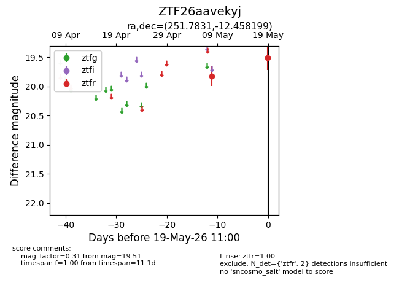
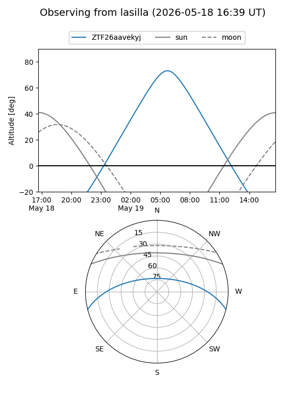
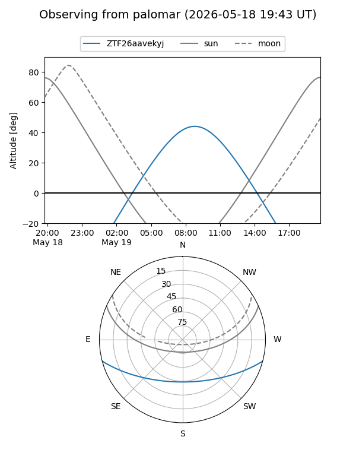

ZTF26aavekyj
Target ZTF26aavekyj at 2026-05-19 11:02
Aliases and brokers:
FINK: link
Lasair: link
ALeRCE: link
alt names
ZTF26aavekyj (ztf,fink_ztf)
Coordinates:
equatorial (ra, dec) = 251.7831,-12.45820
equatorial (HMS+DMS) = 16:47:07.93,-12:27:29.52
galactic (l, b) = (6.1663,+20.50014)
Flags:
Photometry:
last ztfr=19.51
2 ztfr detections
Lightcurve

Visibility


Additional plots